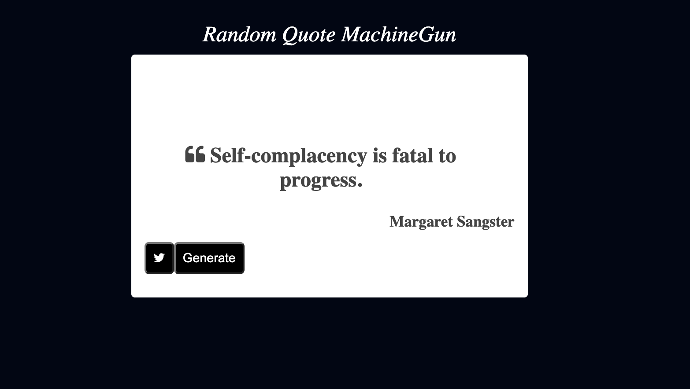
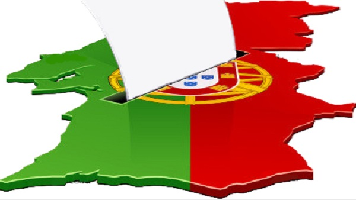
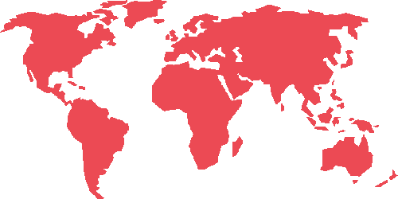
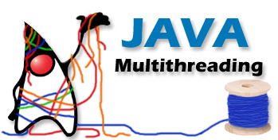
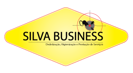
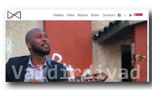
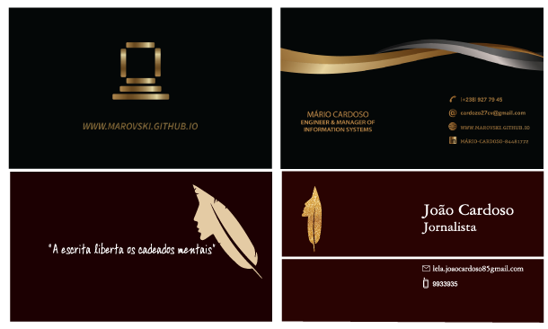

About me
Mário Cardoso
I'm an Engineering Project Manager driven by a simple idea: technology should solve real problems.
Over the past few years, my work has evolved beyond engineering into the intersection of project management, digital transformation, software development and entrepreneurship. I currently lead enterprise projects in the telecommunications sector, where I coordinate multidisciplinary teams, align business objectives with technical execution, and help transform strategy into operational results.
Outside my professional role, I enjoy building products from the ground up. From developing a direct booking platform for my accommodation business to experimenting with AI-assisted development workflows, I'm constantly exploring how modern technologies can simplify processes and create value.
I also have a strong interest in data storytelling, governance and the future of Cabo Verde. I believe that complex topics become more useful when presented through clear analysis, compelling visuals and practical insights.
I hold a Master's degree in Engineering and Information Systems Management from the University of Minho (Portugal), but I see continuous learning as an essential part of my career. Technology evolves quickly, and I strive to evolve with it.
When I'm away from my laptop, you'll usually find me at the gym, driving around the island, travelling, or planning the next project to build.
Leading enterprise projects as Supervisor de Gestão de Projetos Empresariais at CVTelecom, building the Cantinho C direct booking platform, and maintaining the Simulador Crédito CV.
Journey
-
Cabo Verde Telecom
Jul 2026 – PresentSupervisor de Gestão de Projetos Empresariais, Direção de Clientes Empresariais, at CVTelecom in Praia - Cabo Verde.
-
Cabo Verde Telecom
Oct 2023 – Jun 2026Engineering Projects Manager at the Department of Engineer and Investments of CVT in Praia - Cabo Verde.
-
Cantinho C Alojamento Complementar
Jun 2019 – PresentGeneral Manager in charge of a small BnB in Praia - Cabo Verde, responsible for the efficient running of your establishment. This includes ensuring standards of cleanliness and maintenance are upheld, budgets are controlled and any problems are quickly rectified.
-
Ministry of Finance & Ministry of State Modernization and Public Administration
Nov 2020 – Jun 2023Special Advisor of Assistent Secretary of State for Administrative Modernization & from May 2021 - Special Advisor of Minister of State Modernization and Public Administration.
-
Finance Ministry of Cabo Verde
Jul 2019 – Nov 2020Advisor of Assistent Secretary of State for Administrative Modernization.
-
Unitel T+
Mar 2019 – May 2019Worked at Unitel T+ (Telecom Company) based in Praia - Cabo Verde for 2 months, as Product & Service Technician with the emphasis on managing the BI System of the Company to provide support on Marketing and Product launching decisions.
-
Freelancer
Jan 2019 – Mar 2019Design of Employee Cards (photography included) and Services Plan for a Cleaning and a Pest Control business.
Social Media Management for Artist Valdirdivad, Maravilhas de Cabo Verde, Bom Ki Bali and Vip S&S Fashion.
-
Moved to Cabo Verde
Dec 2018Return to homeland Praia - Cabo Verde.
-
University of Minho Library
May 2016 – Jul 2017Performed various support tasks as Library Helpdesk staff element.
-
University
Sept 2013 – 2018Enrolled in Integrated Master in Engineering and Management of Information Systems - University of Minho, since 2013 and finished on Dec 2018.
-
New City
Sept 2013Changed my residence to Guimarães-Portugal.
-
Study Abroad
Sept 2011 – 2013Enrolled 2 years in CS bachelor at University of Minho, where i learned some of the basics of CS like data structures, algorithmic complexity, imperical programming, functional programming, graphs, etc. But i opted to change course due to the versatility and opportunities presented by the IS course at University of Minho.
-
Moved to Portugal
Sept 2011Started my journey abroad, moving to Braga, Portugal.
-
Finished High School
Sept 2005 – 2011I finished my secondary education at Science and Technology field in Cabo Verde.
-
Born
Jan 1994In Cape Verde, Praia City in Santiago island
Skills
Experience
Technical Skills
Tools & Platforms
Languages
Soft Skills
Featured Projects
Simulador Crédito CV
Falta de uma ferramenta acessível para calcular o custo real de um crédito em Cabo Verde — não só a mensalidade, mas a TAEG (Taxa Anual de Encargos Efetiva Global), que reflete despesas e seguros.
Aplicação web com sliders interativos para simular mensalidades e TAEG, tabelas de amortização expansíveis, comparação de cenários lado a lado, interface bilingue (PT/EN) e modo escuro. Todo o cálculo corre no browser — nenhum dado é enviado para um servidor — e instala-se como PWA para uso offline.
Versão 4.0, activamente mantida, instalável em Android/iOS/desktop, suportada em Chrome, Firefox, Safari e Edge. Mais de 430 utilizadores activos e 1.200 visualizações desde o início do ano.
Cantinho C — Plataforma de Reservas
O Cantinho C precisava de um canal de reserva e pagamento directo, em Escudos Cabo-verdianos, sem depender apenas de canais de terceiros.
Plataforma de reservas própria com verificação de disponibilidade em tempo real, criação de reserva, iniciação e confirmação de pagamento, portal de self-service para o hóspede consultar/cancelar reservas, notificações por email e painel de administração — conteúdo gerido por CMS headless.
Plataforma em produção, com cerca de 30.000 ECV em receitas geradas directamente através do site.
Estratégia de Governação Digital de Cabo Verde
A administração pública de Cabo Verde precisava de uma estratégia coordenada de governação digital para orientar a modernização do Estado.
Como Assessor Especial no Ministério de Estado da Modernização e da Administração Pública, coordenação da elaboração da Estratégia para Governação Digital de Cabo Verde, e co-autoria e apresentação do artigo sobre a estratégia na ICEGOV 2021, a maior conferência mundial de E-Gov.
Coordenação de projecto (Estratégia de Governação Digital) · Co-autor e apresentador (paper ICEGOV 2021).
Paper distinguido como "Best Industry & Public Sector Short Paper" na ICEGOV 2021; Estratégia de Governação Digital publicada oficialmente pelo Governo de Cabo Verde.
II Plano de Ação Nacional de Governação Aberta (OGP)
Cabo Verde precisava de um plano de acção estruturado e alinhado aos compromissos internacionais da Open Government Partnership para avançar a agenda de Governo Aberto.
Como Assessor Especial da Secretária de Estado para Modernização Administrativa, coordenação da elaboração do II Plano de Acção Nacional de Governação Aberta de Cabo Verde (2023-2025).
Co-coordenador e co-autor do Plano de Acção Nacional.
II Plano de Acção Nacional (2023-2025) publicado oficialmente pela Open Government Partnership.
Outros Projectos

Simple Javascript tool for random quote generator using react js built in the context of FCC
Web developer using PHP, MariaDB, Javascript and CSS, to build a website for the simulation of the FIFA World Cup 2018.
Backend dev using Java. Information about the matches, the players and the 32 participating countries to simulate the World Cup, using MVC as design pattern.
GitHub Chief Web Developer, coordinating the building of the platform where professionals could evaluate their patients based on the exercises performed, minimizing their neurological disorders.
LinkTo acertain the plays of a poker player and support the decisions in the pre-flop phase (TexasHold'em), as a Data Model Developer, I had to experiment DM techniques for classification in RapidMiner.

Build a business intelligence system (using SQLServer,Tableau&PowerBI) to support decision making based on data from legislative elections and population census of Portugal.

Link Used Power BI to build reports
Link Analyzed and tested Data Extraction&Exploration tools for BI on the market and their applicability to resolve and help these user’s issues in their work environment.

LinkCreated data models that allow us to preview the income level of more than 100 countries.

A client/server app using TCP and UDP sockets, to diffuse short text msg (max 140 chars) between users.

Logo Design and Service Plan elaboration for a Pest Control Company.
Implemented the facebook Page and flyers/logo design for BomkiBali to allow those who want to sell their product, have a greater disclosure and speed in the connection with buyers.

Developed a artist page for ValdirDivad and introduced all his music to online streaming platforms
Employee cards Design (photography included) for a Cleaning Services Company.

Business Card Design

Feel free to ask me anything
I am a person who likes challenges and puts ideas into practice. Contact me to talk about your project. Offer me a challenge!
Check my short CV